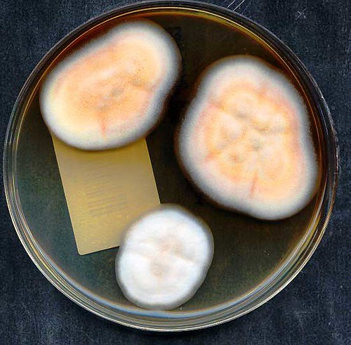
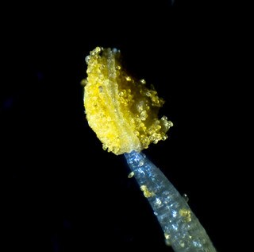
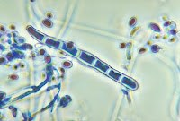
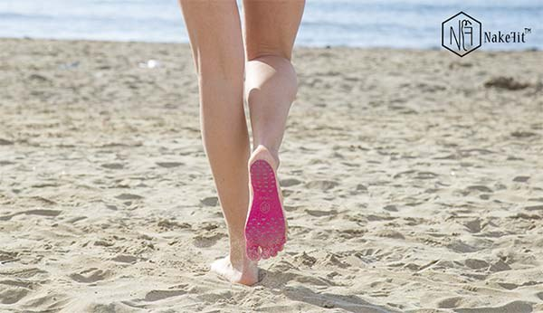

Ayak Mantarı (Tinea Pedis)
Tinea pedis veya ayak saçkıranı, ayak tabanlarını, ayak parmaklarının parmak arası yarıklarını ve tırnakları etkileyen mantar enfeksiyonudur. Bu enfeksiyona, bir zamanlar Afrika, Asya ve Avustralya'nın birçok bölgesinde endemik olan Trichophyton rubrum adında bir mantar neden olur.[1][2][3]. Ancak günümüzde bu organizmaya Avrupa ve Amerika'da da rastlanmaktadır.
Esas olarak Trichophyton rubrum tinea pedis'e neden olur. Trichophyton interdigitale ve Epidermophyton floccosum da söz konusudur. Ara sıra görülen diğer etkenler arasında Tricholosporum violaceum yer alır. T. rubrum vakaların yaklaşık %70'ini oluşturur[4][5].
Risk Faktörleri
- Sıcak ve nemli bir ortam
- Tıkayıcı ayakkabıların uzun süre giyilmesi
- Aşırı terleme
- Uzun süre suya maruz kalma
Yaygınlık
Toplam nüfusun yaklaşık %10'u ayak parmak yarıklarının mantar enfeksiyonlarından etkilenebilir. Bu durum çoğunlukla uzun süre tıkayıcı (hava almayan) ayakkabı giyilmesine bağlanmaktadır. Tinea pedis insidansının (yaygınlığının) toplum banyolarını, duşları ve havuzları kullananlar arasında daha yüksek olduğu gözlemlendiğinden, yıkama tesislerinin paylaşılması enfeksiyon olasılığını artırabilir. Bu durum yetişkin erkeklerde kadınlara kıyasla daha yaygındır. Bir çalışmada ortalama başlangıç yaşı 15 olarak bulunmuştur[4][6].
Mantar Vücuda Nasıl Yerleşir?
Ayak yarıklarının tıkanması, maserasyon (ılaklığa bağlı dokuda görülen bir bozulma türü) ve bakteriyel florada eş zamanlı artışla birlikte ıslak koşullar muhtemelen tinea pedis enfeksiyonuna katkıda bulunur. Derinin parçalanması, nem ve sıcaklık bu enfeksiyonda rol oynar. Mantar, derinin keratin tabakasını istila etmek için keratinaz adı verilen enzimler salgılar. Buna ek olarak, dermatofit hücre duvarı vücudun bağışıklık tepkisini baskılayan mannans adı verilen moleküller de içerir.
Bu sayede mantar zaten hasarlı olan deride mantar kendine bir yer açar ve yerleşir.
Hasta Ne Hisseder?
Tinea pedisli hastalar çoğunlukla ayak parmaklarında soyulma, maserasyon ve fissürleşme (yırtılma) ile karakterize, uzun süreli, kaşıntılı, intertriginöz (iki bölge arası) bir dermatit (deri enfeksiyonu) ile başvururlar. Yanal ayak yarıkları esas olarak ayak parmaklarının alt yüzeyinin tutulumundan etkilenir. Etkilenen bölgeler eritematözdür (kızarıktır) ve ince, gümüşi beyaz pullarla kaplıdır. Bazen, ayak tabanında su toplamış lezyonlar olabilir. En yaygın yerleşim yeri parmak aralarıdır.
Ayakların parmak arası ve parmak altı derisinde pullanma, maserasyon, erozyon ve eritem şeklinde başlar. Kaşıntı ve kötü koku mevcuttur. Kronik hiperkeratotik tipi genellikle ayak tabanının alt, iç ve yan taraflarında yamalı veya yaygın pullanma ile kendini gösterir. Vezikülobüllöz form tipik olarak Trichophyton mentagrophytes'ten kaynaklanır ve taban üzerinde gergin su toplamış lezyonlar şeklinde görülür. Bu lezyonların neden olduğu yanma ve kaşıntı büyük rahatsızlık yaratabilir. Bazen, ilişkili bakteriyel enfeksiyon tinea pedis'in akut ülseratif tipiyle sonuçlanabilir.
Tanı Nasıl Konulur?
Çoğu zaman fizik muayene tanı koymak için yeterlidir. Gerekli görülürse laboratuvar ile doğrulanabilir.
Lezyondan alınan sürüntünün mikroskopla incelenmesi ile mantara ait oluşumlar gözlemlenebilir.
Hastalığın Yönetimi ve Tedavisi
Doktorunuzun muayene sonrası yazacağı topikal ilaçlar (krem, merhem, sprey vs) çoğu zaman yeterlidir. İlerlemiş enfeksiyonlarda sistemik ilaç (hap, şurup, iğne vs) tedavisi de verilebilir.
Tedavi süresince aşağıdaki konulara dikkat edilmelidir.:
- Ayakların kuru kalmasını sağlamak,
- Kullandığımız havluyu başkasının kullanmaması,
- Çıplak ayakla evde gezinmemek,
- Çorapları ve ayakkabıları ortak kullanmamak
Bunlara dikkat etmek hem iyileşmeyi kolaylaştırır hem de bulaşma ihtimalini azaltır.
Yeniden bulaşı engellemek için eski ayakkabılar atılmalı ve kişisel bakım malzemelerini paylaşmaktan kaçınılmalıdır. Yüzme havuzunda veya saunada koruyucu ayakkabılar giyilmelidir. Ayaklar kuru bırakılmalı ve havalanmayı engelleyen dar ayakkabılar giymekten kaçınılmalıdır. Pamuklu çoraplar tercih edilir ve ayaklar sürekli terliyorsa kurutucu bir antifungal toz eklenebilir.
Sağlıklı insanların çoğu için tedaviye başlandığında sonuçlar mükemmeldir. Çoğu insan birkaç gün içinde semptomların hafiflediğini ve 7-14 gün içinde tamamen iyileştiğini görür. Ancak, hemiplejik (felçli) veya bağışıklık sistemi baskılanmış hastalarda tinea enfeksiyonu selülit ve hatta piyoderma gibi daha şiddetli deri enfeksiyonları ile ilişkili olabilir. [7][8]
Kaynak: https://www.ncbi.nlm.nih.gov/books/NBK470421/
